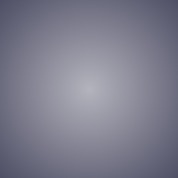

Педагог, наставник, человек, который вдохновляет делать то, что правильно.
Легко делать то,
что правильно
— Николай Батин
Николай Батин — преподаватель Белорусского государственного университета информатики и радиоэлектроники (БГУИР). Он известен своим неравнодушным подходом к обучению, глубоким пониманием предмета и умением вдохновлять студентов на осознанный выбор в профессии и жизни.
Окончил Белорусский государственный университет информатики и радиоэлектроники — один из ведущих технических вузов страны.
Начал преподавательскую деятельность в родном университете, сочетая академический подход с практическим опытом.
Продолжает готовить будущих инженеров и IT-специалистов, передавая не только знания, но и жизненные принципы.
Не только формулам и алгоритмам — но и тому, как мыслить, решать и быть честным с собой.
Сложное нужно уметь объяснить просто. Понимание важнее заучивания.
Философия, ставшая девизом: легко делать то, что правильно — если ты знаешь, что это.
Каждое решение имеет последствия. Настоящий инженер думает на шаг вперёд.